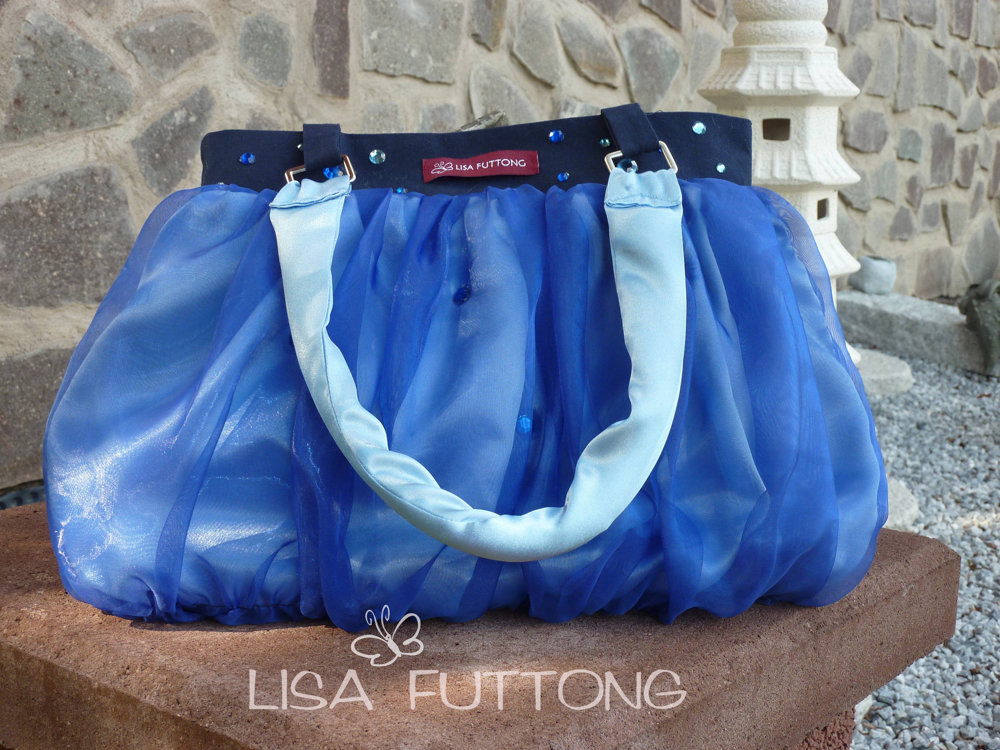
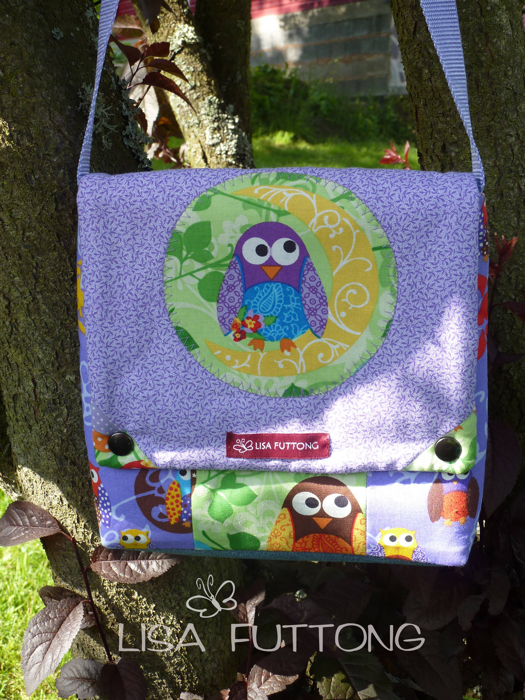

<div id="posts">

    <a href="images/taschen/dtkgtasche.jpg" rel="prettyPhoto[pp_gal]"
       title="Der absolute Schrei für jede Party, Dieter Thomas Kuhn Gedächnistasche, verkauft">
        
    </a>

    <a href="images/taschen/ballblue1.jpg" rel="prettyPhoto[pp_gal]" title="Verspielte Handtasche mit Strasssteinchen, 34 €">
        
    </a>

    <a href="images/taschen/eule1.jpg" rel="prettyPhoto[pp_gal]" title="Super Süße Kindergartentasche nicht nur für Vorschulkinder, ca. 24x22cm, 24 €">
        
    </a>

    <a href="images/taschen/ladyred1.jpg" rel="prettyPhoto[pp_gal]" title="Ausgefallene Ausgehtasche mit echten Federn, Innen roter Pannesamt, 49 €">
        
    </a>
    <a href="images/taschen/karogirl.jpg" rel="prettyPhoto[pp_gal]"
       title="Handtasche, Model:  Karo Girl, mit fünf kleinen Aussentaschen und einer Innentasche ca.35x26cm, 37 €">
        
    </a>
     <a href="images/taschen/glitzerfilz.jpg" rel="prettyPhoto[pp_gal]"
       title="Die etwas andere Filztasche mit Glitzersteinchen,gestrickt, Innenfutter mit süßem Blümchenmuster und Innentasche, 29 €">
        
    </a>
    <a href="images/taschen/theater1.jpg" rel="prettyPhoto[pp_gal]"
       title="Elegant und schick, Beuteltasche mit Kordel zum zusammenziehen, Innen blau, ca.36x18cm, 33 €">
        
    </a>
</div>

<div id="links">
    <ul>
        <li>
            <ul>
                <li><a href="index.html">Startseite</a></li>
                <li><a href="#">Kontakt</a></li>
                <li><a href="#">Kundenstimmen</a></li>
                <li><a href="#">Impressum</a></li>
            </ul>
        </li>
    </ul>
</div>

